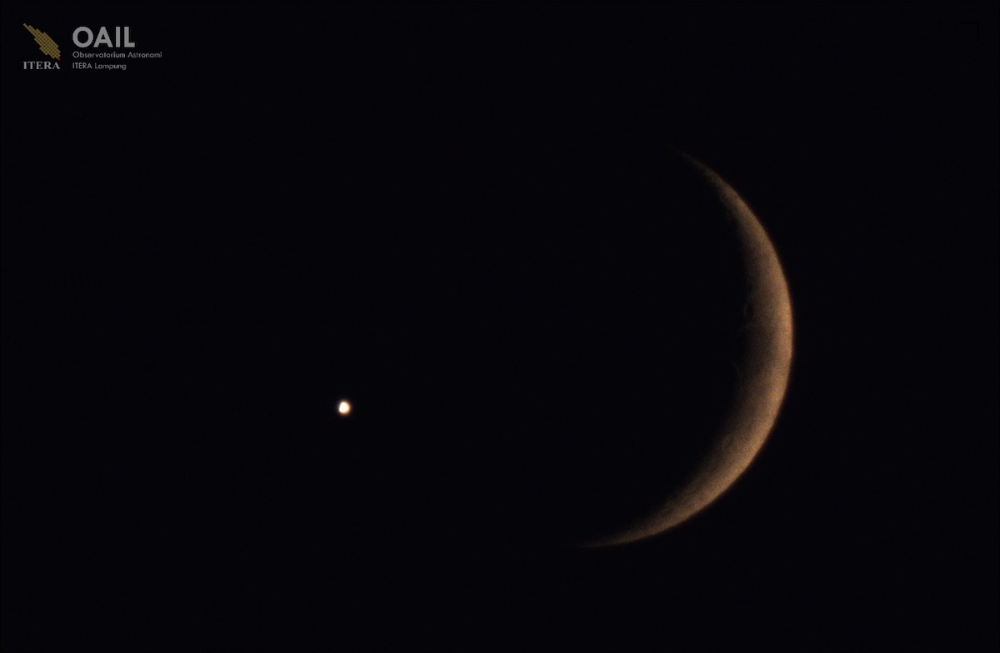

OAIL Bersama Jejaring Astronomi Nasional Berhasil Amati Okultasi Venus oleh Bulan

ITERA NEWS - Observatorium Astronomi Itera Lampung (OAIL) berkolaborasi dengan jejaring observatorium di seluruh Indonesia, termasuk Observatorium Bosscha, Bandung, melakukan pengamatan fenomena astronomi okultasi Venus oleh Bulan pada malam ini, Senin, 14 September 2026. Di Lampung, kegiatan pengamatan dilaksanakan di rooftop Gedung Kuliah Umum 2 Kampus Itera. Kepala Pusat OAIL, Dr. Annisa Novia Indra Putri, S.Si., M.Si., dalam keterangannya menyampaikan, berdasarkan hasil pengamatan, proses okultasi terjadi pada pukul 19.56-19.57 WIB, ketika piringan Bulan menutupi Venus. Okultasi Venus oleh Bulan terjadi ketika Bulan melintas di depan Venus dari perspektif pengamat di Bumi, menyebabkan Venus tampak menghilang sementara di balik piringan Bulan. “Fenomena ini menjadi kesempatan menarik untuk mengamati secara langsung dinamika posisi benda-benda langit,” ujar Dr. Annisa. Pengamatan ini menjadi momentum penting untuk memperkuat kolaborasi antarobservatorium dan komunitas astronomi di Indonesia. Dari Lampung, OAIL turut mengambil bagian dalam mendokumentasikan fenomena langit yang dapat diamati secara langsung oleh masyarakat Annisa menambahkan, pengamatan yang dilakukan OAIL merupakan bagian dari kegiatan kolaboratif bersama jejaring observatorium di berbagai wilayah Indonesia. Kolaborasi ini memungkinkan fenomena yang sama didokumentasikan dari lokasi yang berbeda, sekaligus memperkuat jejaring pengamatan astronomi di Indonesia. “Pengamatan ini menjadi momentum penting untuk memperkuat kolaborasi antarobservatorium dan komunitas astronomi di Indonesia. Dari Lampung, OAIL turut mengambil bagian dalam mendokumentasikan fenomena langit yang dapat diamati secara langsung oleh masyarakat,” ujar Dr. Annisa. Kegiatan pengamatan ini juga menjadi bagian dari upaya OAIL untuk memperkenalkan astronomi kepada masyarakat serta mendorong keterlibatan generasi muda dalam kegiatan observasi dan sains berbasis pengamatan. (Rilis/Humas)